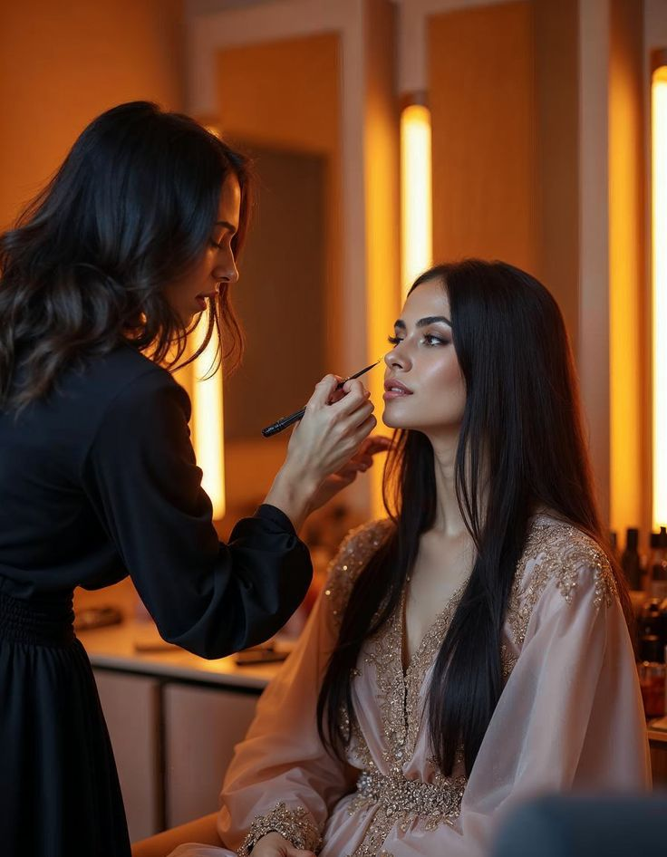

Inspirasi makeup-ku datang dari gaya Bella Hadid yang menonjolkan keanggunan alami, tampilan minimalis, dan hasil akhir yang terlihat effortless. Gaya ini membuatku tertarik untuk belajar lebih dalam tentang teknik makeup yang bisa mempertegas fitur wajah tanpa berlebihan.
Buat aku, makeup lebih dari sekadar alat kecantikan — ini adalah seni dan bentuk kepercayaan diri. Setiap warna yang aku pilih dan setiap detail yang aku poles selalu bercerita tentang suasana hatiku. Ada hari di mana aku ingin tampil minimalis, ada juga saat aku ingin terlihat bold dan glam. Makeup mengajarkanku bahwa kecantikan itu bukan hasil akhir, tapi proses untuk mengenal dan mencintai diri sendiri setiap harinya.
Di masa depan, aku ingin terus belajar dan memperdalam dunia kecantikan dengan hati yang terbuka. Aku ingin memahami lebih banyak tentang teknik makeup, warna kulit, dan bagaimana setiap tampilan bisa membawa cerita tersendiri. Mimpiku bukan hanya menjadi seseorang yang mahir dalam makeup, tapi juga bisa menginspirasi orang lain untuk berani tampil apa adanya. Aku ingin membuat orang merasa bahwa kecantikan tidak harus sempurna — cukup jujur, percaya diri, dan bahagia dengan dirinya sendiri. Karena bagiku, masa depan yang indah adalah ketika aku bisa tumbuh, berbagi, dan tetap setia dengan passion yang aku cintai.
Back